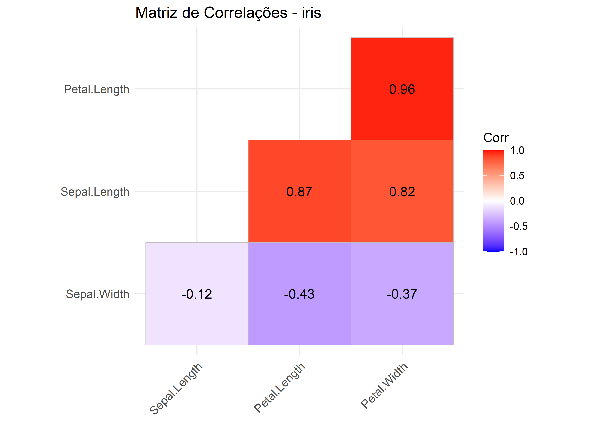
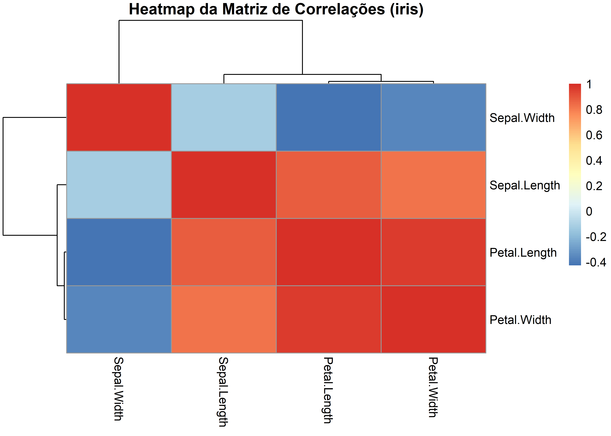

Descrição e visualização de dados multivariados utilizando a base Iris
1 Introdução
A base iris (FISHER (1936)) é um dos conjuntos de dados mais clássicos e didáticos da estatística. Ela contém 150 observações (flores) de três espécies, setosa, versicolor e virginica, medidas em quatro variáveis contínuas:
Sepal.Length (cm)
Sepal.Width (cm)
Petal.Length (cm)
Petal.Width (cm)
Nosso objetivo é revisar conceitos fundamentais de Estatística Multivariada:
Vetor de médias
Matrizes de covariância e correlação
Variância total e generalizada
Matrizes de distância (euclidiana e de Mahalanobis)
Visualizações (pares, correlograma, heatmaps)
2 Preparação e inspeção dos dados
# Pacotes necessários# install.packages(c("tidyverse","GGally","ggcorrplot","pheatmap","factoextra", "MatchIt"))library(tidyverse)library(GGally)library(ggcorrplot)library(pheatmap)library(factoextra)library(MatchIt)# Carregar a base irisdados <- irisglimpse(dados)
Sepal.Length Sepal.Width Petal.Length Petal.Width
Min. :4.300 Min. :2.000 Min. :1.000 Min. :0.100
1st Qu.:5.100 1st Qu.:2.800 1st Qu.:1.600 1st Qu.:0.300
Median :5.800 Median :3.000 Median :4.350 Median :1.300
Mean :5.843 Mean :3.057 Mean :3.758 Mean :1.199
3rd Qu.:6.400 3rd Qu.:3.300 3rd Qu.:5.100 3rd Qu.:1.800
Max. :7.900 Max. :4.400 Max. :6.900 Max. :2.500
Species
setosa :50
versicolor:50
virginica :50
# Parte numérica e variável categóricaX <-as_tibble(dados[, 1:4])y <- dados$Species
💡 Interpretação: A base iris possui 150 observações e 5 variáveis, sendo quatro contínuas, Sepal.Length, Sepal.Width, Petal.Length e Petal.Width (em centímetros) e uma categórica, Species, com três espécies (setosa, versicolor e virginica). O resumo descritivo da base iris indica amostra balanceada por espécie (50 setosa, 50 versicolor, 50 virginica) e sugere padrões distintos entre sépalas e pétalas: Sepal.Length (4,3–7,9; Q1=5,1; mediana=5,8; média≈5,84) e Sepal.Width (2,0–4,4; Q1=2,8; mediana=3,0; média≈3,06) mostram variação moderada e distribuição quase simétrica (médias próximas às medianas), enquanto Petal.Length (1,0–6,9; Q1=1,6; mediana=4,35; média≈3,76) e Petal.Width (0,1–2,5; Q1=0,3; mediana=1,3; média≈1,20) exibem maior dispersão e assimetria à esquerda, refletindo a presença de muitas pétalas pequenas (típicas de setosa) e valores maiores nas demais espécies; isso cria um perfil “bimodal” nas pétalas, que costuma discriminar fortemente as espécies, ao passo que as medidas de sépala contribuem de forma mais moderada para a separação.
3 Vetor de médias
# Vetor de médias globalmedia_global <-colMeans(X)media_global
# Vetor de médias por espéciemedia_por_especie <- X %>%mutate(Species = y) %>%group_by(Species) %>%summarise(across(everything(), mean), .groups ="drop")media_por_especie
💡 Interpretação: o vetor de médias representa o “centro” da nuvem de pontos. Comparar médias por espécie ajuda a perceber separações entre grupos (por exemplo, pétalas maiores em virginica). Os valores mostram o padrão clássico da iris: setosa tem pétalas bem menores (PL=1,462; PW=0,246) e sépalas relativamente mais largas (SW=3,428), além de menor comprimento de sépala (SL=5,006); virginica apresenta as maiores pétalas (PL=5,552; PW=2,026) e o maior comprimento de sépala (SL=6,588), com largura de sépala intermediária (SW=2,974); versicolor fica entre as duas em todas as medidas (PL=4,260; PW=1,326) e tem a menor largura de sépala (SW=2,770).
📈 Covariância: mede associação linear nas unidades originais. As variâncias (diagonal) indicam que a maior dispersão está em Petal.Length (3.1163), seguida de Sepal.Length (0.6857) e Petal.Width (0.5810), enquanto Sepal.Width varia menos (0.1900). Nos termos cruzados, há covariância positiva forte entre Petal.Length e Petal.Width (1.2956), e também entre Sepal.Length com Petal.Length (1.2743) e com Petal.Width (0.5163); já Sepal.Width apresenta covariâncias negativas com as demais (especialmente com Petal.Length: −0.3297).
📊 Correlação: padroniza a covariância (-1 a 1), útil quando variáveis têm escalas diferentes. A matriz de correlações da iris mostra que as medidas de pétala são fortemente associadas: Petal.Length e Petal.Width têm correlação muito alta (0,963) e ambas se correlacionam bastante com Sepal.Length (0,872 e 0,818), indicando forte redundância informacional entre essas variáveis; já Sepal.Width se relaciona negativamente com as demais (−0,118 com Sepal.Length, −0,428 com Petal.Length e −0,366 com Petal.Width), sugerindo um padrão em direção oposta. Em síntese, as pétalas dominam a variação e separam melhor as espécies, enquanto Sepal.Width adiciona informação complementar (e contrária), com alerta para possível multicolinearidade entre as medidas de pétala.
5 Variância generalizada e total
# Variância generalizada (determinante de S)eigen(S)
📦 VG (determinante): A variância generalizada 0,00191273 é o determinante da matriz de covariâncias S e mede o “volume” da dispersão conjunta; um valor tão pequeno indica forte colinearidade/redundância entre as variáveis, especialmente entre Petal.Length e Petal.Width, de modo que a nuvem de pontos fica “achatada” em algumas direções (um ou mais autovalores de S são pequenos, e o produto deles, o determinante, cai). Em termos práticos, isso sugere que as medidas de pétala carregam informação muito semelhante.
# Variância total (traço de S)VT <-sum(diag(S))VT
[1] 4.572957
🧮 VT (traço): soma das variâncias marginais = dispersão total marginal. Ela mede a dispersão global do conjunto e é dependente de escala; padronizando as variáveis (z-scores), a variância total passaria a ser \(p = 4\). Pela decomposição: Petal.Length responde por aproximadamente 68,1% da variância total, Sepal.Length responde por 15,0%, Petal.Width por 12,7% e Sepal.Width por 4,2%, confirmando que as medidas de pétala dominam a variabilidade.
💡 Interpretação: O “pairs plot” da iris mostra que setosa tem pétalas muito pequenas e sépalas mais largas, enquanto versicolor e virginica apresentam pétalas maiores (com alguma sobreposição), e em Sepal.Width a espécie setosa desloca-se à direita, versicolor à esquerda e virginica fica intermediária. As correlações globais destacam Petal.Lengthvs.Petal.Width como fortíssima (≈0,96) e Sepal.Length bem associado às pétalas; já Sepal.Width aparece negativamente correlacionado no agregado. Contudo, por espécie as relações com Sepal.Width tendem a ser positivas, e os dispersogramas envolvendo medidas de pétala exibem a melhor separação entre espécies. Em síntese, as pétalas dominam a estrutura e a discriminação, com Sepal.Width fornecendo informação complementar.
7.2 Correlograma
ggcorrplot(R, hc.order =TRUE, type ="lower",lab =TRUE, tl.cex =10,title ="Matriz de Correlações - iris")

💡 Interpretação: O mapa de correlações da iris evidencia três padrões centrais: (1) forte associação positiva entre as medidas de pétala: Petal.Lengthvs.Petal.Width ≈ 0,96 e também de Sepal.Length com as pétalas (≈ 0,87 e 0,82), indicando redundância informacional e provável multicolinearidade; (2) Sepal.Width apresenta correlações negativas com as demais variáveis (≈ −0,12 com Sepal.Length, −0,43 com Petal.Length e −0,37 com Petal.Width), sugerindo um eixo de variação em sentido oposto ao das pétalas; e (3) como consequência, em tarefas de PCA ou classificação, as pétalas tendem a dominar a separação entre espécies, enquanto Sepal.Width adiciona sinal complementar.
7.3 Heatmap das correlações
pheatmap(R, cluster_rows =TRUE, cluster_cols =TRUE,main ="Heatmap da Matriz de Correlações (iris)")

💡 Interpretação: O heatmap das correlações da iris confirma dois blocos de variáveis: (i) Petal.Length e Petal.Width fortemente positivas entre si (vermelho intenso) e também bem alinhadas com Sepal.Length (vermelho), formando um grupo altamente correlacionado que indica redundância e tende a dominar a variação; (ii) Sepal.Width aparece em azul frente às demais, mostrando correlação negativa moderada, o que a isola no dendrograma e sugere um eixo complementar de informação. Em termos práticos, as pétalas são as melhores para discriminar espécies (e podem sofrer multicolinearidade), enquanto Sepal.Width acrescenta sinal em direção oposta.